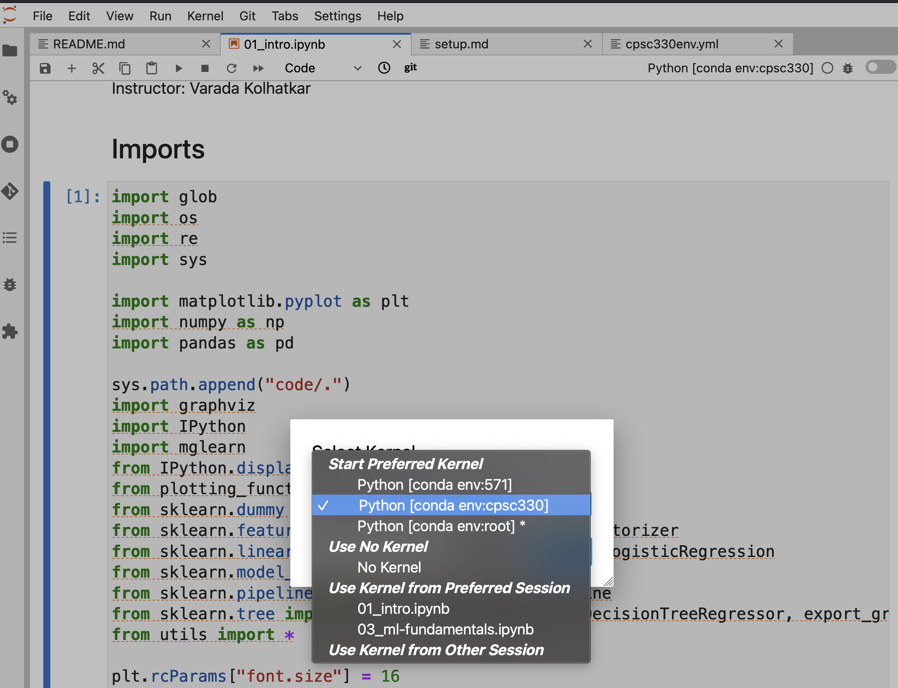

Setting up coding environment
Contents
Setting up coding environment#
Git#
If you want to clone the class GitHub repository and run lecture notebooks locally, which is highly recommended, you will need Git on your computer. Check out the git setup instructions. Also, most of our homework assignments will be done in JupyterLab. You don’t have to do it but it might be easier for you to create a private GitHub repository for your homework assignments.
Once you have Git go to the directory where you want to do CPSC 330 work, and clone the Course GitHub repository using the following command on your command line.
git clone https://github.com/UBC-CS/cpsc330.git
When there are updates in the repository, you can update the local copy using the command below from the directory of the repository.
git pull
Python and Conda#
We will be using Python for this course because it is open source and widely used in machine learning and data science. We will use Python 3 (in particular 3.9). Python 2 is not supported in this course.
We recommend the Miniconda Python distribution because it comes bundled with a bunch of useful packages (NumPy, SciPy, scikit-learn, Jupyter notebook) pre-installed. You can download Miniconda from their website that is suitable for your operating system. For example, I downloaded Miniconda3 MaxOSX 64-bit pkg on my macOS.
To make sure that miniconda and Python are correctly installed, follow the instructions below based on your operating system.
macOS#
After installation, go to spotlight search on your macbook and type “terminal” and go to this program. If you already have terminal open, restart it. If the installation was successful, you will see (base) prepending to your prompt string. For example, here is how the terminal prompt looks like on my macbook.
(base) kvarada@CPSC-W-KVARADA01:~$
To confirm that conda is working, you can ask it which version was installed:
conda --version
which should return something like:
conda 4.10.3
Now, type
python --version
which should return Python 3.9.0 or greater.
Windows#
After installation, open the Start Menu and search for the program called “Anaconda Prompt (miniconda3)”. When this opens you will see a prompt similar to
(base) C:\Users\your_name
Type the following to check that your Python installation is working:
python --version
which should return Python 3.9.0 or greater.
Note: If instead you see Python 2.7.X you installed the wrong version. Uninstall the Miniconda you just installed (which usually lives in the /opt directory), and try the installation again, selecting Python 3.9.
Installing Python packages#
conda installs Python packages from different online repositories which are called “channels”. A package needs to go through thorough testing before it is included in the default channel, which is good for stability, but also means that new versions will be delayed and fewer packages are available overall. There is a community-driven effort called the conda-forge, which provides more up to date packages. To enable us to access the most up to date version of the Python packages we are going to use, we will add the more up to date channel. To add the conda-forge channel by typing the following in the terminal:
conda config --add channels conda-forge
JupyterLab#
We will be using JupyterLab as our main coding environment and pandas is one of the key data analyses packages. Install them via the following commands:
conda install pandas jupyterlab jupyterlab-spellchecker nb_conda_kernels
For other packages we need for the course, we will be creating a conda virtual environment. (See the instructions in the next section.)
Virtual environment#
What and Why#
A virtual environment is a Python environment such that the Python interpreter, libraries and scripts installed into it are isolated from those installed in other virtual environments, and (by default) any libraries installed in a “system” Python, i.e., one which is installed as part of your operating system. For example, you may want a certain version of tensorflow for one project but another version for a different project. Virtual environments helps us to build environment isolation between different projects and make sure any change to dependencies affects only the projects that need it.
Setting up a virtual environment: Conda environments#
Make sure that
condais installed by runningconda env list
You should see a list of environments as the output. If Miniconda is not installed, you can download Miniconda (a small, bootstrap version of Anaconda) from here.
Download cpsc330env.yml and put it in your working directory
Create an environment by
conda env create -f cpsc330env.yml
which allows
condato download the dependencies needed for this course and put them in a virtual environment namedcpsc330. You can check that the environemnt is installed successfully by runningconda env listagain.cpsc330should show up in the output.Activate the environment with
conda activate cpsc330
After a successful activation, something like
(cpsc330)should show up in the terminal.To deactivate the environment, run
conda deactivate
We are all set! When you want to run the lecture materials or work on your homework, start Jupyter Lab from your base environment, as shown below.
(base) kvarada@CPSC-W-KVARADA01:~$ jupyter lab
Jupyter Lab will be opened in your default browser. Navigate to the appropriate notebook in Jupyter Lab. When you open the notebook, you should see our newly created conda environment cpsc330 there. See the screenshots below. Select cpsc330 as the preferred kernel.


For more information on conda environments, see here.
Now you should be able to run the lecture notebooks on your computer!! Note that the environment file above is good to get started but it does not contain all packages we will be using in the course and we might have to install some packages manually later in the course.
Debugging#
If the conda env create -f cpsc330env.yml command above results in an error on your computer:
Figure out what package it’s failing on from the error message.
Get rid of the line with that package from your local copy of
cpsc330env.yml.Try creating the environment again with the modified
cpsc330env.yml.Once the environment is created, activate the environment and install the missing packages manually in the environment. You may have to install these packages using
pip installin some cases, as the most recent version of the package might not available viacondafor your operating system yet.If you still have trouble with the environment and running lecture notebooks on your machine, make use of office hours and tutorials.
Credit#
These installation instructions are based on the MDS software installation instructions.